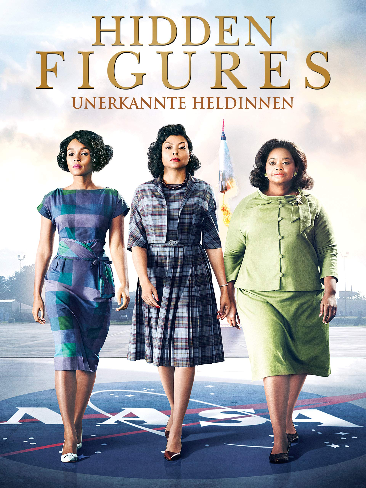

Reply 1988

Hidden Figures
Reply 1988
Hidden Figures
REPLY 1988
Lee Hyeri as Duk-Sun
Ryoo Joon-Yeol as Jung Hwan
Ko Kyoung-Pyo as Sun-Woo
Park-BoGum as Taek
Lee Dong-Hwi as Dong-Ryong
Sung Dong-II
Lee II-Hwa
Ryoo Hye-Young as Sung Bo-ra
Choi Sung-Won as Sung No-Eul
Ahn Jae-Hong as Kim Jung-Bong
Kim Sun as Jin-Joo
Lee Min-Ji as Jang-Mi-Ok
Lee Se-Young as Wang Ja-Hyun
Kwon Eun-Soo as Song-Hee
Yeo Woon-Bok
Kim Sun-Young
Yoo Jae-Myung
Choi Moo-Sung
Kim Sung-Kyun
Ra Mi-Ran
"Reply 1988" is a South Korean television series that aired in 2015-2016. Set in the late 1980s in a neighborhood in Seoul, the show revolves around five families who live on the same street, showcasing their everyday lives, friendships, and coming-of-age experiences. The story is narrated from the perspective of Sung Deok-sun (played by Lee Hye-ri), a high school girl, as she reminisces about her adolescence and the people who shaped her life. Deok-sun lives with her loving but eccentric family, including her father, mother, and two older sisters. The neighborhood is a tight-knit community where everyone knows each other, and the families share both joys and struggles. Deok-sun's best friends include Choi Taek (played by Park Bo-gum), a talented baduk (Go) player who is a bit aloof but has a kind heart, and Kim Jung-hwan (played by Ryu Jun-yeol), a witty and sarcastic boy with a hidden sensitive side. As the series progresses, viewers witness the characters' growth and development, as they navigate challenges such as family expectations, first loves, friendships, and dreams for the future. The show captures the essence of the 1980s in South Korea, including cultural references, societal changes, and historical events, while also exploring universal themes of love, friendship, and the passage of time. "Reply 1988" received widespread acclaim for its heartwarming storytelling, well-developed characters, and nostalgic portrayal of life in the late 20th century. It became one of the highest-rated dramas in Korean television history and remains beloved by viewers for its relatable and poignant depiction of youth and community.
Hidden Figures
Taraji P. Henson as Katherine Goble Johnson
Octavia Spencer as Dorothy Vaughan
Janelle Monae as Mary Jackson
Kevin Costner as Al Harrison
Kirsten Dunst as Vivian Mitchell
Jim Parsons as Paul Stafford
Mahershala Ali as Jim Johnson
Aldis Hodge as Levi Jackson
Glen Powell as John Glenn
Kimberly Quinn as Ruth
Olek Krupa as Karl Zielinski
Saniyya Sidney as Constance Johnson
"Hidden Figures" is a biographical drama film released in 2016, directed by Theodore Melfi and based on the non-fiction book of the same name by Margot Lee Shetterly. The film tells the untold true story of three African-American women mathematicians who played pivotal roles at NASA during the early years of the U.S. space program. Set in the 1960s during the height of the Cold War and the Space Race between the United States and the Soviet Union, the film follows the lives of Katherine Johnson, Dorothy Vaughan, and Mary Jackson, three brilliant women working as "human computers" at NASA's Langley Research Center in Virginia. Katherine Johnson, portrayed by Taraji P. Henson, is a gifted mathematician who becomes integral to the calculations necessary for the success of John Glenn's historic orbit around the Earth. Despite facing racial and gender discrimination, Katherine's expertise and perseverance make her indispensable to the mission. Dorothy Vaughan, played by Octavia Spencer, is a supervisor in the segregated West Area Computers division. She recognizes the threat posed by the introduction of IBM computers and takes it upon herself to learn programming, ultimately becoming NASA's first African-American supervisor. Mary Jackson, portrayed by Janelle Monáe, dreams of becoming an engineer but faces obstacles due to racial segregation in education. With the support of her colleagues and a landmark court case, Mary breaks down barriers and becomes NASA's first African-American female engineer. Throughout the film, the three women navigate systemic racism and sexism in both society and the workplace, overcoming numerous challenges to make significant contributions to NASA's success. "Hidden Figures" highlights their remarkable achievements and sheds light on their vital yet overlooked roles in the history of space exploration.